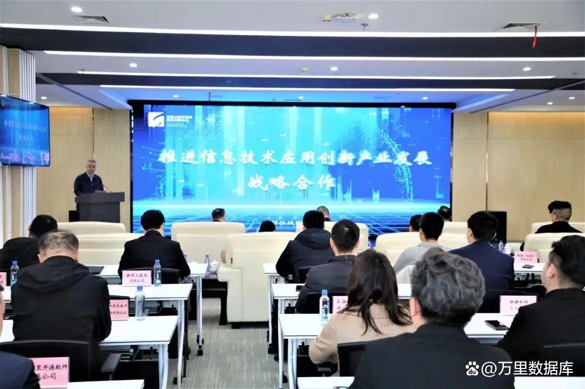
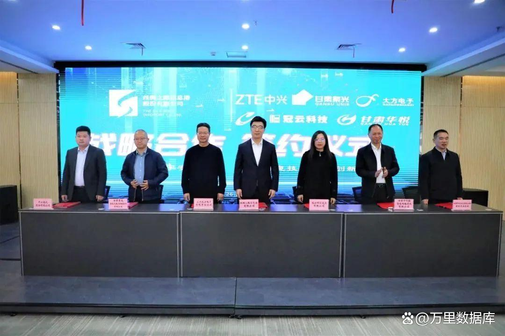

战略合作 | 争当数字甘肃“开路先锋” 万里数据库出席信创产业发展战略合作仪式
信创产业战略合作仪式
近日，甘肃省工业互联网、大数据、网络安全三大产业链链主企业丝绸之路信息港股份有限公司（以下简称：丝绸之路信息港）成功举办信息技术应用创新产业发展战略合作签约仪式。丝绸之路信息港是甘肃省委省政府抢抓“一带一路”机遇，积极构建生态产业体系，打造信息制高点的重大战略部署举措。
甘肃省工信厅党组成员、省政府国资委党委委员，以及省委办公厅、省委网信办、省委机要保密局、兰州市委机要保密局相关负责人出席仪式，丝绸之路信息港管理层及41家信息技术企业代表参会。

万里数据库作为信息技术产业链知名企业之一，受邀出席签约仪式，与丝绸之路信息港副总经理郭立平完成了《战略合作框架协议》签署，未来将作为甘肃信创产业链核心的开路先锋之一，积极响应国家“一带一路”发展政策，为甘肃省提供多行业应用场景信创方案，进一步推动数字甘肃建设。

作为2023年首批通过安全可靠信息测评的企业之一，万里数据库成立25年来始终专注于国家关键核心技术产业建设，攻克数据库领域“卡脖子”难题，为千行百业提供优秀、稳定的关键核心基础设施与数字化转型方案，服务金融、运营商、能源、政府等多个国民经济重点行业。
与此同时，万里数据库持续服务全国多省地市，助推各区域数字化转型及信息技术产业高质量发展。去年以来，公司先后入围央采及广西、江苏、深圳、四川、新疆、西安等重点省市政府框架采购目录。
此次与丝绸之路信息港达成战略合作，为万里数据库更好服务于甘肃省、建设数字甘肃打下了重要基础，也为推动“一带一路”建设，打造政治互信、经济融合、文化包容的利益共同体、命运共同体和责任共同体提供坚实的数字新基建底座。
未来，万里数据库将积极协同丝绸之路信息港，持续加大科技创新投入力度，通过持续的数据库技术创新与解决方案升级，有力落实国家信创战略，携手产业链生态伙伴共同攻克信创产业关键技术难题，完善构建我国自主可控、安全可靠、竞争力强的信息技术体系，为甘肃数字经济发展注入新的动力。